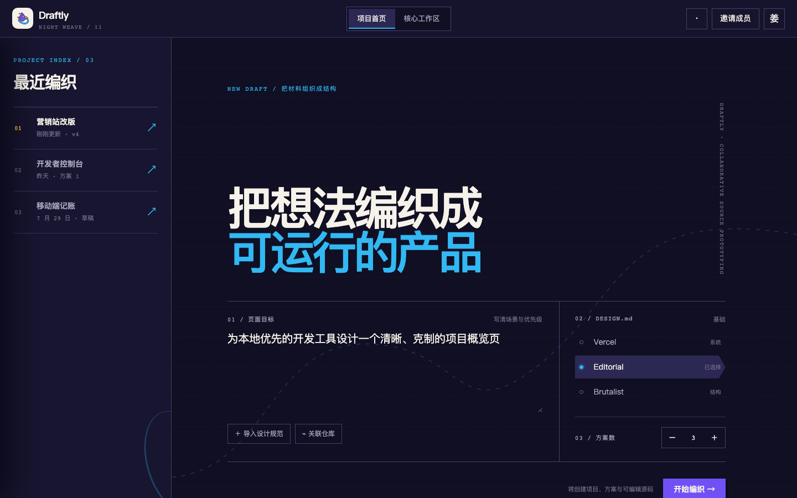
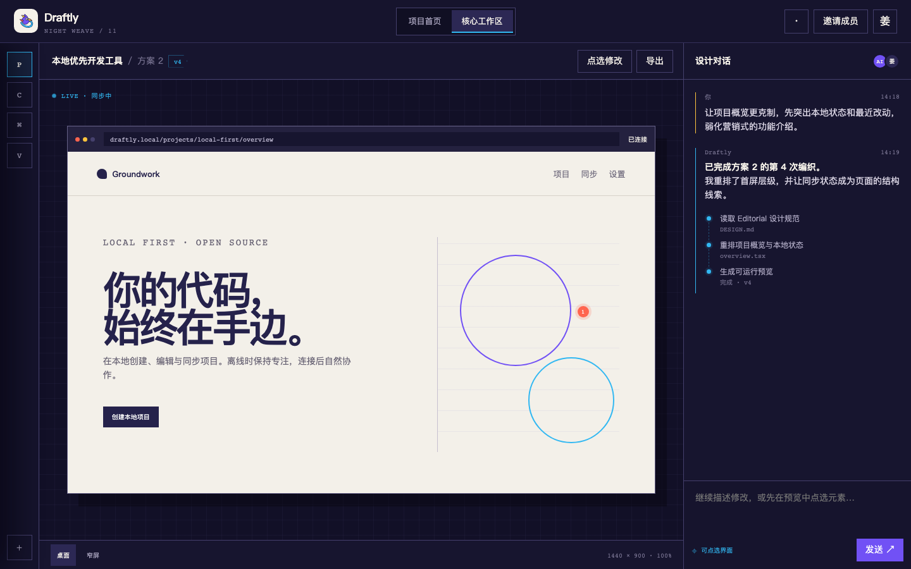
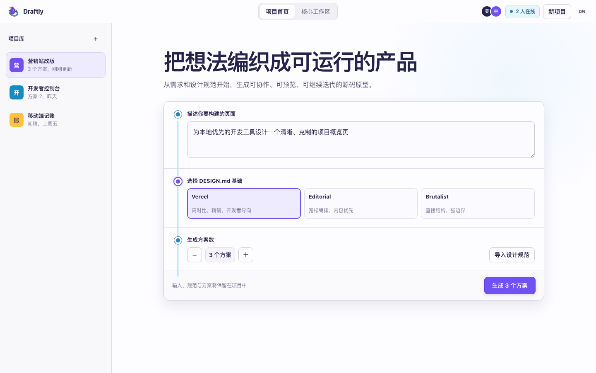
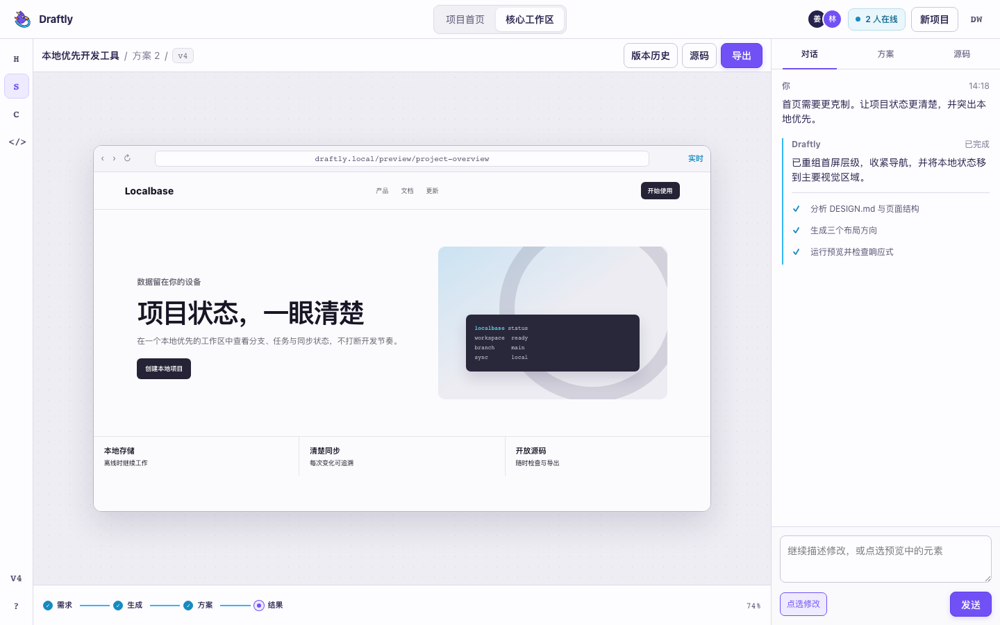
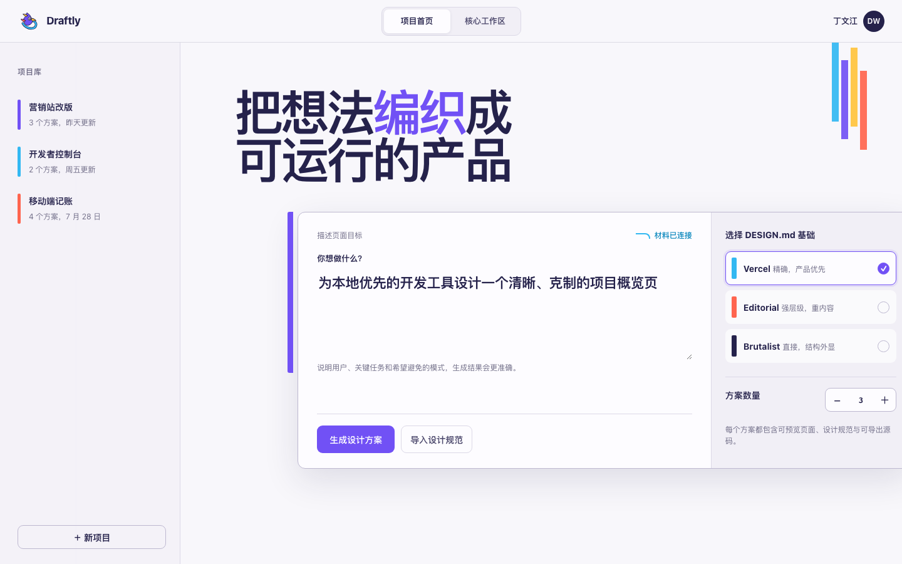
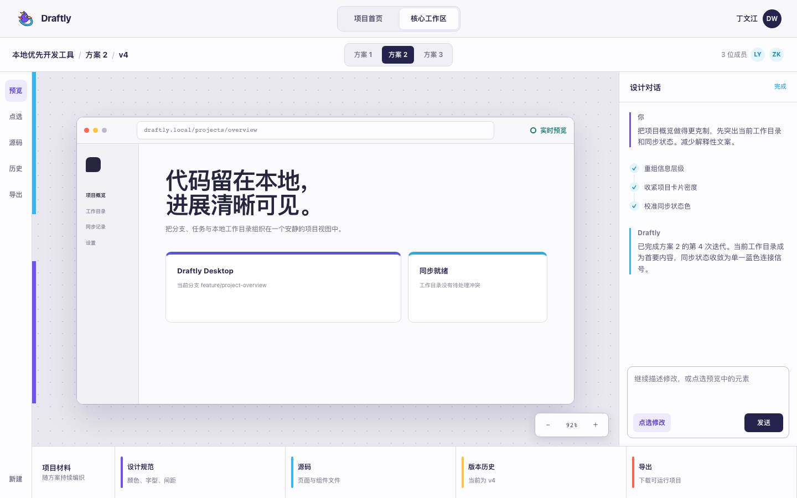

01 · Roulette / Dark Editorial
Night Weave
夜织工作台
深紫夜间编辑台、等宽状态与蓝色连续路径。品牌最强，气质最锐利，适合把 Draftly 塑造成面向专业创作者的独立工具。

HOME
WORKSPACE打开交互稿高识别 · 高密度
同一套真实产品内容、同一套织巢鸟品牌资产，分别探索夜间编辑台、画布优先工具与模块化品牌系统。每版都包含项目首页与核心工作区。
01 · Roulette / Dark Editorial
深紫夜间编辑台、等宽状态与蓝色连续路径。品牌最强，气质最锐利，适合把 Draftly 塑造成面向专业创作者的独立工具。

HOME
WORKSPACE02 · Reality Benchmark
明亮、克制、画布优先，借鉴成熟协作设计工具的层级与操作效率，再用连续路径建立 Draftly 自己的生成叙事。

HOME
WORKSPACE03 · Brand Studio System
把羽片、编织环和不对称构造变成模块化产品语言。比画布版更有品牌记忆，又保持明亮、专业与可扩展。

HOME
WORKSPACE